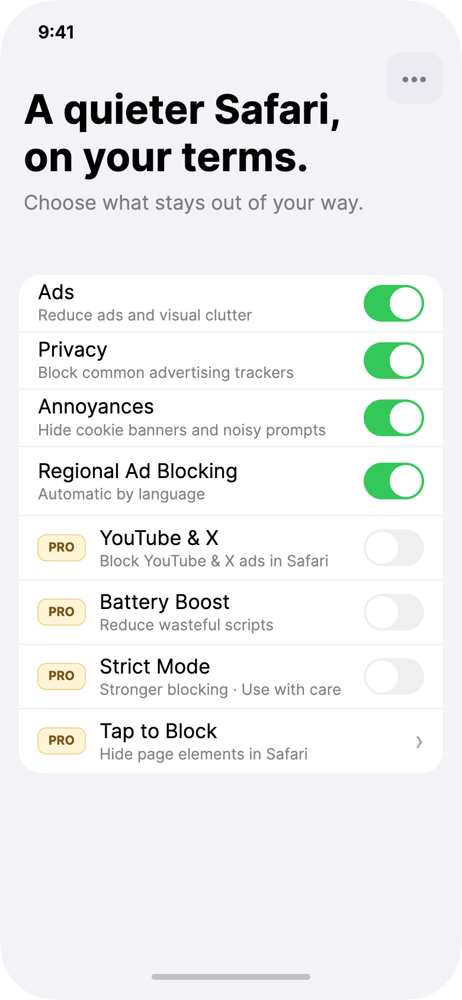

Ads & trackers
Clear common ads and advertising trackers in Safari.
Effortlessly block ads, trackers, and annoyances in Safari— with Pro tools when you need them. Protection that stays out of the way.

Turn protection on in a few steps. Stillwall blocks common ads, reduces advertising trackers, and quiets cookie banners—then works in the background.
Regional rules apply automatically from your language. Pause a site from the Safari extension when something needs a pass. No account required.
Clear common ads and advertising trackers in Safari.
Quieter cookie banners and noisy prompts.
Protection On or Off—simple, honest status.
Filter lists refresh quietly. No rule editor to maintain.
Stillwall should feel quiet when protection is on—not busy proving itself with charts and threat counters.
Few steps to enable. Defaults that already help.
If Safari access isn’t ready, we won’t say you’re protected.
We don’t collect browsing history. Not a VPN.
Global off in the app, or pause this site in the extension.

Free core protection covers everyday browsing. Pro unlocks stronger Safari-only tools— without turning the free tier into a trial wall.
Extra blocking for those sites in Safari—not the native apps.
Reduce wasteful scripts, stronger rules when you choose, hide elements with a tap.
1 month free, then $14.99/year · Family Sharing supported
Works in Safari on iPhone and iPad. Other apps keep their own ads.
We don’t route your traffic or hide your IP. Content blocking, cleanly.
Filter updates download without uploading where you browse.
Install once. Finish setup. Keep scrolling in peace.